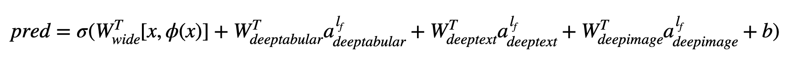

pytorch-widedeep¶
A flexible package for multimodal-deep-learning to combine tabular data with text and images using Wide and Deep models in Pytorch
Documentation: https://pytorch-widedeep.readthedocs.io
Companion posts and tutorials: infinitoml
Experiments and comparison with LightGBM: TabularDL vs LightGBM
Slack: if you want to contribute or just want to chat with us, join slack
The content of this document is organized as follows:
Introduction¶
pytorch-widedeep is based on Google's Wide and Deep Algorithm,
adjusted for multi-modal datasets.
In general terms, pytorch-widedeep is a package to use deep learning with
tabular data. In particular, is intended to facilitate the combination of
text and images with corresponding tabular data using wide and deep models.
With that in mind there are a number of architectures that can be implemented
with the library. The main components of those architectures are shown in the
Figure below:

In math terms, and following the notation in the
paper, the expression for the architecture
without a deephead component can be formulated as:

Where σ is the sigmoid function, 'W' are the weight matrices applied to the wide model and to the final activations of the deep models, 'a' are these final activations, φ(x) are the cross product transformations of the original features 'x', and , and 'b' is the bias term. In case you are wondering what are "cross product transformations", here is a quote taken directly from the paper: "For binary features, a cross-product transformation (e.g., “AND(gender=female, language=en)”) is 1 if and only if the constituent features (“gender=female” and “language=en”) are all 1, and 0 otherwise".
It is perfectly possible to use custom models (and not necessarily those in
the library) as long as the the custom models have a property called
output_dim with the size of the last layer of activations, so that
WideDeep can be constructed. Examples on how to use custom components can
be found in the Examples folder and the section below.
Architectures¶
The pytorch-widedeep library offers a number of different architectures. In
this section we will show some of them in their simplest form (i.e. with
default param values in most cases) with their corresponding code snippets.
Note that all the snippets below shoud run locally. For a more detailed
explanation of the different components and their parameters, please refer to
the documentation.
For the examples below we will be using a toy dataset generated as follows:
import os
import random
import numpy as np
import pandas as pd
from PIL import Image
from faker import Faker
def create_and_save_random_image(image_number, size=(32, 32)):
if not os.path.exists("images"):
os.makedirs("images")
array = np.random.randint(0, 256, (size[0], size[1], 3), dtype=np.uint8)
image = Image.fromarray(array)
image_name = f"image_{image_number}.png"
image.save(os.path.join("images", image_name))
return image_name
fake = Faker()
cities = ["New York", "Los Angeles", "Chicago", "Houston"]
names = ["Alice", "Bob", "Charlie", "David", "Eva"]
data = {
"city": [random.choice(cities) for _ in range(100)],
"name": [random.choice(names) for _ in range(100)],
"age": [random.uniform(18, 70) for _ in range(100)],
"height": [random.uniform(150, 200) for _ in range(100)],
"sentence": [fake.sentence() for _ in range(100)],
"other_sentence": [fake.sentence() for _ in range(100)],
"image_name": [create_and_save_random_image(i) for i in range(100)],
"target": [random.choice([0, 1]) for _ in range(100)],
}
df = pd.DataFrame(data)
This will create a 100 rows dataframe and a dir in your local folder, called
images with 100 random images (or images with just noise).
Perhaps the simplest architecture would be just one component, wide,
deeptabular, deeptext or deepimage on their own, which is also
possible, but let's start the examples with a standard Wide and Deep
architecture. From there, how to build a model comprised only of one
component will be straightforward.
Note that the examples shown below would be almost identical using any of the
models available in the library. For example, TabMlp can be replaced by
TabResnet, TabNet, TabTransformer, etc. Similarly, BasicRNN can be
replaced by AttentiveRNN, StackedAttentiveRNN, or HFModel with
their corresponding parameters and preprocessor in the case of the Hugging
Face models.
1. Wide and Tabular component (aka deeptabular)

from pytorch_widedeep.preprocessing import TabPreprocessor, WidePreprocessor
from pytorch_widedeep.models import Wide, TabMlp, WideDeep
from pytorch_widedeep.training import Trainer
# Wide
wide_cols = ["city"]
crossed_cols = [("city", "name")]
wide_preprocessor = WidePreprocessor(wide_cols=wide_cols, crossed_cols=crossed_cols)
X_wide = wide_preprocessor.fit_transform(df)
wide = Wide(input_dim=np.unique(X_wide).shape[0])
# Tabular
tab_preprocessor = TabPreprocessor(
embed_cols=["city", "name"], continuous_cols=["age", "height"]
)
X_tab = tab_preprocessor.fit_transform(df)
tab_mlp = TabMlp(
column_idx=tab_preprocessor.column_idx,
cat_embed_input=tab_preprocessor.cat_embed_input,
continuous_cols=tab_preprocessor.continuous_cols,
mlp_hidden_dims=[64, 32],
)
# WideDeep
model = WideDeep(wide=wide, deeptabular=tab_mlp)
# Train
trainer = Trainer(model, objective="binary")
trainer.fit(
X_wide=X_wide,
X_tab=X_tab,
target=df["target"].values,
n_epochs=1,
batch_size=32,
)
2. Tabular and Text data

from pytorch_widedeep.preprocessing import TabPreprocessor, TextPreprocessor
from pytorch_widedeep.models import TabMlp, BasicRNN, WideDeep
from pytorch_widedeep.training import Trainer
# Tabular
tab_preprocessor = TabPreprocessor(
embed_cols=["city", "name"], continuous_cols=["age", "height"]
)
X_tab = tab_preprocessor.fit_transform(df)
tab_mlp = TabMlp(
column_idx=tab_preprocessor.column_idx,
cat_embed_input=tab_preprocessor.cat_embed_input,
continuous_cols=tab_preprocessor.continuous_cols,
mlp_hidden_dims=[64, 32],
)
# Text
text_preprocessor = TextPreprocessor(
text_col="sentence", maxlen=20, max_vocab=100, n_cpus=1
)
X_text = text_preprocessor.fit_transform(df)
rnn = BasicRNN(
vocab_size=len(text_preprocessor.vocab.itos),
embed_dim=16,
hidden_dim=8,
n_layers=1,
)
# WideDeep
model = WideDeep(deeptabular=tab_mlp, deeptext=rnn)
# Train
trainer = Trainer(model, objective="binary")
trainer.fit(
X_tab=X_tab,
X_text=X_text,
target=df["target"].values,
n_epochs=1,
batch_size=32,
)
3. Tabular and text with a FC head on top via the head_hidden_dims param
in WideDeep

from pytorch_widedeep.preprocessing import TabPreprocessor, TextPreprocessor
from pytorch_widedeep.models import TabMlp, BasicRNN, WideDeep
from pytorch_widedeep.training import Trainer
# Tabular
tab_preprocessor = TabPreprocessor(
embed_cols=["city", "name"], continuous_cols=["age", "height"]
)
X_tab = tab_preprocessor.fit_transform(df)
tab_mlp = TabMlp(
column_idx=tab_preprocessor.column_idx,
cat_embed_input=tab_preprocessor.cat_embed_input,
continuous_cols=tab_preprocessor.continuous_cols,
mlp_hidden_dims=[64, 32],
)
# Text
text_preprocessor = TextPreprocessor(
text_col="sentence", maxlen=20, max_vocab=100, n_cpus=1
)
X_text = text_preprocessor.fit_transform(df)
rnn = BasicRNN(
vocab_size=len(text_preprocessor.vocab.itos),
embed_dim=16,
hidden_dim=8,
n_layers=1,
)
# WideDeep
model = WideDeep(deeptabular=tab_mlp, deeptext=rnn, head_hidden_dims=[32, 16])
# Train
trainer = Trainer(model, objective="binary")
trainer.fit(
X_tab=X_tab,
X_text=X_text,
target=df["target"].values,
n_epochs=1,
batch_size=32,
)
4. Tabular and multiple text columns that are passed directly to
WideDeep

from pytorch_widedeep.preprocessing import TabPreprocessor, TextPreprocessor
from pytorch_widedeep.models import TabMlp, BasicRNN, WideDeep
from pytorch_widedeep.training import Trainer
# Tabular
tab_preprocessor = TabPreprocessor(
embed_cols=["city", "name"], continuous_cols=["age", "height"]
)
X_tab = tab_preprocessor.fit_transform(df)
tab_mlp = TabMlp(
column_idx=tab_preprocessor.column_idx,
cat_embed_input=tab_preprocessor.cat_embed_input,
continuous_cols=tab_preprocessor.continuous_cols,
mlp_hidden_dims=[64, 32],
)
# Text
text_preprocessor_1 = TextPreprocessor(
text_col="sentence", maxlen=20, max_vocab=100, n_cpus=1
)
X_text_1 = text_preprocessor_1.fit_transform(df)
text_preprocessor_2 = TextPreprocessor(
text_col="other_sentence", maxlen=20, max_vocab=100, n_cpus=1
)
X_text_2 = text_preprocessor_2.fit_transform(df)
rnn_1 = BasicRNN(
vocab_size=len(text_preprocessor_1.vocab.itos),
embed_dim=16,
hidden_dim=8,
n_layers=1,
)
rnn_2 = BasicRNN(
vocab_size=len(text_preprocessor_2.vocab.itos),
embed_dim=16,
hidden_dim=8,
n_layers=1,
)
# WideDeep
model = WideDeep(deeptabular=tab_mlp, deeptext=[rnn_1, rnn_2])
# Train
trainer = Trainer(model, objective="binary")
trainer.fit(
X_tab=X_tab,
X_text=[X_text_1, X_text_2],
target=df["target"].values,
n_epochs=1,
batch_size=32,
)
5. Tabular data and multiple text columns that are fused via a the library's
ModelFuser class

from pytorch_widedeep.preprocessing import TabPreprocessor, TextPreprocessor
from pytorch_widedeep.models import TabMlp, BasicRNN, WideDeep, ModelFuser
from pytorch_widedeep import Trainer
# Tabular
tab_preprocessor = TabPreprocessor(
embed_cols=["city", "name"], continuous_cols=["age", "height"]
)
X_tab = tab_preprocessor.fit_transform(df)
tab_mlp = TabMlp(
column_idx=tab_preprocessor.column_idx,
cat_embed_input=tab_preprocessor.cat_embed_input,
continuous_cols=tab_preprocessor.continuous_cols,
mlp_hidden_dims=[64, 32],
)
# Text
text_preprocessor_1 = TextPreprocessor(
text_col="sentence", maxlen=20, max_vocab=100, n_cpus=1
)
X_text_1 = text_preprocessor_1.fit_transform(df)
text_preprocessor_2 = TextPreprocessor(
text_col="other_sentence", maxlen=20, max_vocab=100, n_cpus=1
)
X_text_2 = text_preprocessor_2.fit_transform(df)
rnn_1 = BasicRNN(
vocab_size=len(text_preprocessor_1.vocab.itos),
embed_dim=16,
hidden_dim=8,
n_layers=1,
)
rnn_2 = BasicRNN(
vocab_size=len(text_preprocessor_2.vocab.itos),
embed_dim=16,
hidden_dim=8,
n_layers=1,
)
models_fuser = ModelFuser(models=[rnn_1, rnn_2], fusion_method="mult")
# WideDeep
model = WideDeep(deeptabular=tab_mlp, deeptext=models_fuser)
# Train
trainer = Trainer(model, objective="binary")
trainer.fit(
X_tab=X_tab,
X_text=[X_text_1, X_text_2],
target=df["target"].values,
n_epochs=1,
batch_size=32,
)
6. Tabular and multiple text columns, with an image column. The text columns
are fused via the library's ModelFuser and then all fused via the
deephead paramenter in WideDeep which is a custom ModelFuser coded by
the user
This is perhaps the less elegant solution as it involves a custom component by
the user and slicing the 'incoming' tensor. In the future, we will include a
TextAndImageModelFuser to make this process more straightforward. Still, is not
really complicated and it is a good example of how to use custom components in
pytorch-widedeep.
Note that the only requirement for the custom component is that it has a
property called output_dim that returns the size of the last layer of
activations. In other words, it does not need to inherit from
BaseWDModelComponent. This base class simply checks the existence of such
property and avoids some typing errors internally.

import torch
from pytorch_widedeep.preprocessing import TabPreprocessor, TextPreprocessor, ImagePreprocessor
from pytorch_widedeep.models import TabMlp, BasicRNN, WideDeep, ModelFuser, Vision
from pytorch_widedeep.models._base_wd_model_component import BaseWDModelComponent
from pytorch_widedeep import Trainer
# Tabular
tab_preprocessor = TabPreprocessor(
embed_cols=["city", "name"], continuous_cols=["age", "height"]
)
X_tab = tab_preprocessor.fit_transform(df)
tab_mlp = TabMlp(
column_idx=tab_preprocessor.column_idx,
cat_embed_input=tab_preprocessor.cat_embed_input,
continuous_cols=tab_preprocessor.continuous_cols,
mlp_hidden_dims=[16, 8],
)
# Text
text_preprocessor_1 = TextPreprocessor(
text_col="sentence", maxlen=20, max_vocab=100, n_cpus=1
)
X_text_1 = text_preprocessor_1.fit_transform(df)
text_preprocessor_2 = TextPreprocessor(
text_col="other_sentence", maxlen=20, max_vocab=100, n_cpus=1
)
X_text_2 = text_preprocessor_2.fit_transform(df)
rnn_1 = BasicRNN(
vocab_size=len(text_preprocessor_1.vocab.itos),
embed_dim=16,
hidden_dim=8,
n_layers=1,
)
rnn_2 = BasicRNN(
vocab_size=len(text_preprocessor_2.vocab.itos),
embed_dim=16,
hidden_dim=8,
n_layers=1,
)
models_fuser = ModelFuser(
models=[rnn_1, rnn_2],
fusion_method="mult",
)
# Image
image_preprocessor = ImagePreprocessor(img_col="image_name", img_path="images")
X_img = image_preprocessor.fit_transform(df)
vision = Vision(pretrained_model_setup="resnet18", head_hidden_dims=[16, 8])
# deephead (custom model fuser)
class MyModelFuser(BaseWDModelComponent):
"""
Simply a Linear + Relu sequence on top of the text + images followed by a
Linear -> Relu -> Linear for the concatenation of tabular slice of the
tensor and the output of the text and image sequential model
"""
def __init__(
self,
tab_incoming_dim: int,
text_incoming_dim: int,
image_incoming_dim: int,
output_units: int,
):
super(MyModelFuser, self).__init__()
self.tab_incoming_dim = tab_incoming_dim
self.text_incoming_dim = text_incoming_dim
self.image_incoming_dim = image_incoming_dim
self.output_units = output_units
self.text_and_image_fuser = torch.nn.Sequential(
torch.nn.Linear(text_incoming_dim + image_incoming_dim, output_units),
torch.nn.ReLU(),
)
self.out = torch.nn.Sequential(
torch.nn.Linear(output_units + tab_incoming_dim, output_units * 4),
torch.nn.ReLU(),
torch.nn.Linear(output_units * 4, output_units),
)
def forward(self, X: torch.Tensor) -> torch.Tensor:
tab_slice = slice(0, self.tab_incoming_dim)
text_slice = slice(
self.tab_incoming_dim, self.tab_incoming_dim + self.text_incoming_dim
)
image_slice = slice(
self.tab_incoming_dim + self.text_incoming_dim,
self.tab_incoming_dim + self.text_incoming_dim + self.image_incoming_dim,
)
X_tab = X[:, tab_slice]
X_text = X[:, text_slice]
X_img = X[:, image_slice]
X_text_and_image = self.text_and_image_fuser(torch.cat([X_text, X_img], dim=1))
return self.out(torch.cat([X_tab, X_text_and_image], dim=1))
@property
def output_dim(self):
return self.output_units
deephead = MyModelFuser(
tab_incoming_dim=tab_mlp.output_dim,
text_incoming_dim=models_fuser.output_dim,
image_incoming_dim=vision.output_dim,
output_units=8,
)
# WideDeep
model = WideDeep(
deeptabular=tab_mlp,
deeptext=models_fuser,
deepimage=vision,
deephead=deephead,
)
# Train
trainer = Trainer(model, objective="binary")
trainer.fit(
X_tab=X_tab,
X_text=[X_text_1, X_text_2],
X_img=X_img,
target=df["target"].values,
n_epochs=1,
batch_size=32,
)
7. Tabular with a multi-target loss
This one is "a bonus" to illustrate the use of multi-target losses, more than actually a different architecture.

from pytorch_widedeep.preprocessing import TabPreprocessor, TextPreprocessor, ImagePreprocessor
from pytorch_widedeep.models import TabMlp, BasicRNN, WideDeep, ModelFuser, Vision
from pytorch_widedeep.losses_multitarget import MultiTargetClassificationLoss
from pytorch_widedeep.models._base_wd_model_component import BaseWDModelComponent
from pytorch_widedeep import Trainer
# let's add a second target to the dataframe
df["target2"] = [random.choice([0, 1]) for _ in range(100)]
# Tabular
tab_preprocessor = TabPreprocessor(
embed_cols=["city", "name"], continuous_cols=["age", "height"]
)
X_tab = tab_preprocessor.fit_transform(df)
tab_mlp = TabMlp(
column_idx=tab_preprocessor.column_idx,
cat_embed_input=tab_preprocessor.cat_embed_input,
continuous_cols=tab_preprocessor.continuous_cols,
mlp_hidden_dims=[64, 32],
)
# 'pred_dim=2' because we have two binary targets. For other types of targets,
# please, see the documentation
model = WideDeep(deeptabular=tab_mlp, pred_dim=2).
loss = MultiTargetClassificationLoss(binary_config=[0, 1], reduction="mean")
# When a multi-target loss is used, 'custom_loss_function' must not be None.
# See the docs
trainer = Trainer(model, objective="multitarget", custom_loss_function=loss)
trainer.fit(
X_tab=X_tab,
target=df[["target", "target2"]].values,
n_epochs=1,
batch_size=32,
)
The deeptabular component¶
It is important to emphasize again that each individual component, wide,
deeptabular, deeptext and deepimage, can be used independently and in
isolation. For example, one could use only wide, which is in simply a
linear model. In fact, one of the most interesting functionalities
inpytorch-widedeep would be the use of the deeptabular component on
its own, i.e. what one might normally refer as Deep Learning for Tabular
Data. Currently, pytorch-widedeep offers the following different models
for that component:
- Wide: a simple linear model where the nonlinearities are captured via cross-product transformations, as explained before.
- TabMlp: a simple MLP that receives embeddings representing the categorical features, concatenated with the continuous features, which can also be embedded.
- TabResnet: similar to the previous model but the embeddings are passed through a series of ResNet blocks built with dense layers.
- TabNet: details on TabNet can be found in TabNet: Attentive Interpretable Tabular Learning
Two simpler attention based models that we call:
- ContextAttentionMLP: MLP with at attention mechanism "on top" that is based on Hierarchical Attention Networks for Document Classification
- SelfAttentionMLP: MLP with an attention mechanism that is a simplified version of a transformer block that we refer as "query-key self-attention".
The Tabformer family, i.e. Transformers for Tabular data:
- TabTransformer: details on the TabTransformer can be found in TabTransformer: Tabular Data Modeling Using Contextual Embeddings.
- SAINT: Details on SAINT can be found in SAINT: Improved Neural Networks for Tabular Data via Row Attention and Contrastive Pre-Training.
- FT-Transformer: details on the FT-Transformer can be found in Revisiting Deep Learning Models for Tabular Data.
- TabFastFormer: adaptation of the FastFormer for tabular data. Details on the Fasformer can be found in FastFormers: Highly Efficient Transformer Models for Natural Language Understanding
- TabPerceiver: adaptation of the Perceiver for tabular data. Details on the Perceiver can be found in Perceiver: General Perception with Iterative Attention
And probabilistic DL models for tabular data based on Weight Uncertainty in Neural Networks:
- BayesianWide: Probabilistic adaptation of the
Widemodel. - BayesianTabMlp: Probabilistic adaptation of the
TabMlpmodel
Note that while there are scientific publications for the TabTransformer, SAINT and FT-Transformer, the TabFasfFormer and TabPerceiver are our own adaptation of those algorithms for tabular data.
In addition, Self-Supervised pre-training can be used for all deeptabular
models, with the exception of the TabPerceiver. Self-Supervised
pre-training can be used via two methods or routines which we refer as:
encoder-decoder method and constrastive-denoising method. Please, see the
documentation and the examples for details on this functionality, and all
other options in the library.
Text and Images¶
For the text component, deeptext, the library offers the following models:
- BasicRNN: a simple RNN 2. AttentiveRNN: a RNN with an attention mechanism based on the Hierarchical Attention Networks for DocumentClassification
- StackedAttentiveRNN: a stack of AttentiveRNNs
- HFModel: a wrapper around Hugging Face Transfomer-based models. At the moment only models from the families BERT, RoBERTa, DistilBERT, ALBERT and ELECTRA are supported. This is because this library is designed to address classification and regression tasks and these are the most 'popular' encoder-only models, which have proved to be those that work best for these tasks. If there is demand for other models, they will be included in the future.
For the image component, deepimage, the library supports models from the
following families:
'resnet', 'shufflenet', 'resnext', 'wide_resnet', 'regnet', 'densenet', 'mobilenetv3',
'mobilenetv2', 'mnasnet', 'efficientnet' and 'squeezenet'. These are
offered via torchvision and wrapped up in the Vision class.
Acknowledgments¶
This library takes from a series of other libraries, so I think it is just fair to mention them here in the README (specific mentions are also included in the code).
The Callbacks and Initializers structure and code is inspired by the
torchsample library, which in
itself partially inspired by Keras.
The TextProcessor class in this library uses the
fastai's
Tokenizer and Vocab. The code at utils.fastai_transforms is a minor
adaptation of their code so it functions within this library. To my experience
their Tokenizer is the best in class.
The ImageProcessor class in this library uses code from the fantastic Deep
Learning for Computer
Vision
(DL4CV) book by Adrian Rosebrock.
License¶
This work is dual-licensed under Apache 2.0 and MIT (or any later version). You can choose between one of them if you use this work.
SPDX-License-Identifier: Apache-2.0 AND MIT
Cite¶
BibTex¶
@article{Zaurin_pytorch-widedeep_A_flexible_2023,
author = {Zaurin, Javier Rodriguez and Mulinka, Pavol},
doi = {10.21105/joss.05027},
journal = {Journal of Open Source Software},
month = jun,
number = {86},
pages = {5027},
title = {{pytorch-widedeep: A flexible package for multimodal deep learning}},
url = {https://joss.theoj.org/papers/10.21105/joss.05027},
volume = {8},
year = {2023}
}
APA¶
Zaurin, J. R., & Mulinka, P. (2023). pytorch-widedeep: A flexible package for
multimodal deep learning. Journal of Open Source Software, 8(86), 5027.
https://doi.org/10.21105/joss.05027